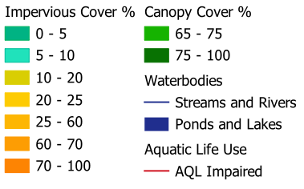

Connecticut Impervious Cover, Canopy Cover, and Water Quality Impairments
Created by: Chloe Edwards
About this map

Impervious cover has been found to degrade stream quality when watersheds contain more than 10% total impervious cover, while watersheds with greater than 20-25% impervious cover are unlikely to support aquatic life.
On the other hand, watersheds with greater than 65% canopy cover protect healthy waters.
This map shows the watersheds within the state of Connecticut symbolized according to their impervious cover percentage and canopy cover percentage. Stream width is scaled to Strahler order, and streams that are not currently supporting
full aquatic life use are highlighted in red. Canopy cover symbology is limited to only watershed catchments with less than 10% impervious cover.
This map demonstrates the relationship between watershed characteristics and evaluated water quality. Additionally, it also highlights watersheds within Connecticut that are nearing land cover thresholds
that may lead to degraded water quality. Watersheds in the 5-10% impervious cover range with less than 65% canopy cover may be vulnerable to future water quality issues.
Map creation process
Map created using QGIS Version 3.34.2 and made interactable with the gdal2tiles tool. Connecticut catchment basins with impervious cover percentage and stream flow lines retrieved from internal
CT DEEP Water Monitoring Program data.
Connecticut lakes, ponds, and ocean polygons retrieved from the CT Geodata Portal.
Impaired river and stream segments retrieved from the 2022 Integrated Water Quality Report to Congress.
Canopy cover raster data retrieved from NOAA.
Shapefiles transformed to EPSG:2234 as needed.
View the full data analysis and map creation process on Github.